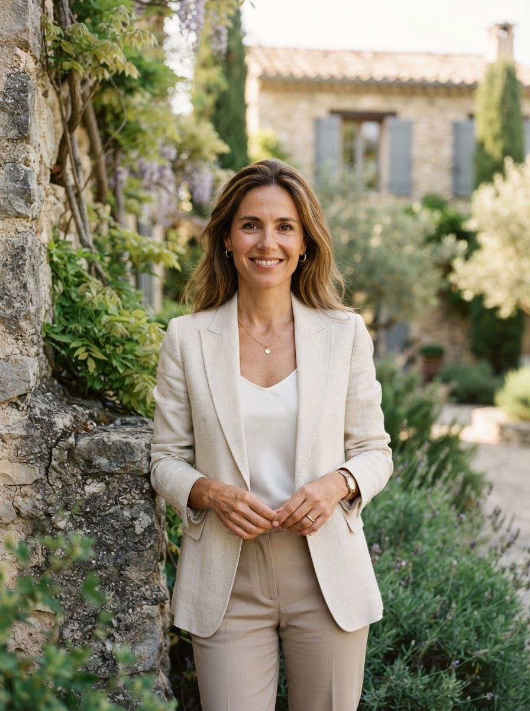

À propos de La Clef Provençale
Une conciergerie fondée par passion pour le patrimoine provençal et exigence du service sur mesure.

Camille Servan, fondatrice & directrice
Originaire du Luberon, Camille Servan a passé plus de quinze ans dans l'hôtellerie de luxe avant de fonder La Clef Provençale en 2021. Après avoir dirigé les opérations de plusieurs maisons d'hôtes et domaines viticoles en Provence, elle a fait le constat que les propriétaires de belles demeures manquaient cruellement d'un interlocuteur unique, fiable et exigeant pour gérer leur bien.
Elle a donc créé La Clef Provençale avec une conviction simple : chaque maison mérite d'être traitée avec le même soin que si elle était la sienne. Aujourd'hui, elle accompagne personnellement chaque propriétaire, du premier rendez-vous jusqu'au suivi quotidien de son bien.
« Je ne gère pas des biens immobiliers, je prends soin de patrimoines familiaux. C'est une responsabilité que je porte avec la plus grande rigueur. » — Camille Servan
Prendre rendez-vous avec CamilleCe qui guide chacune de nos actions
Soin & discrétion
Nous traitons chaque bien et chaque propriétaire avec la confidentialité et le respect qu'ils méritent.
Exigence du détail
Chaque prestation est contrôlée avec la rigueur des standards hôteliers les plus élevés.
Transparence
Un reporting clair, des échanges directs : vous savez toujours ce qu'il se passe dans votre bien.
Les grandes étapes de La Clef Provençale


Création de La Clef Provençale
Camille Servan fonde l'entreprise à Gordes, avec la conviction que les propriétaires méritent une gestion aussi exigeante que discrète.
Premiers biens d'exception
La Bastide des Oliviers à Aix-en-Provence rejoint le portfolio, suivie rapidement d'autres propriétés du Luberon.
Extension vers le littoral
La Clef Provençale étend son activité vers Cassis et les Calanques, avec la Villa Horizon.
Aujourd'hui
Une équipe de confiance, un réseau de partenaires solide, et une ambition intacte : offrir la meilleure gestion possible à chaque propriétaire.
Échangeons sur votre projet
Camille et son équipe sont à votre écoute pour comprendre votre bien et vos objectifs.